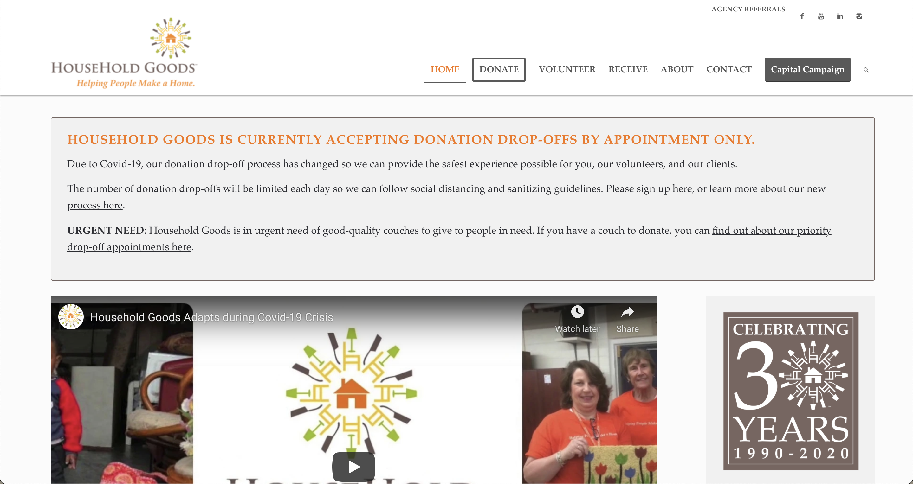
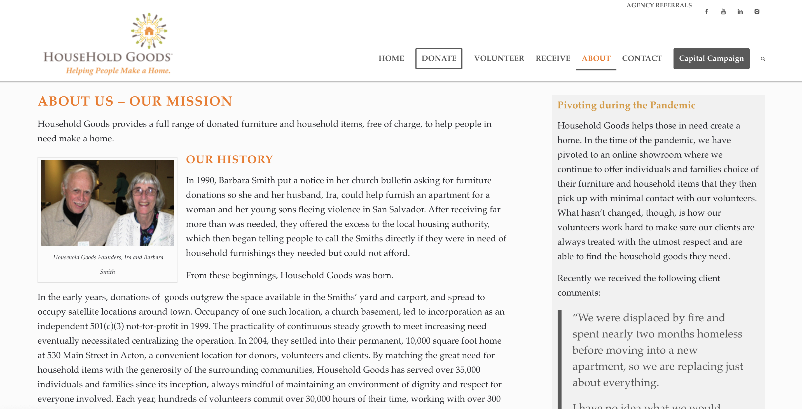

Research
I conducted primary research on my client, Household Goods, and secondary research on other similar organizations. Lastly, I interviewed my client and an individual in my target audience.
Primary Research
About Household Goods
Household Goods is a Massachusetts-based nonprofit with the mission of providing furniture and household items to individuals who cannot afford them. The organization was founded in 1990 by Ira and Barbara Smith. Over the years, Household Goods outgrew the couple's backyard to a 10,000 square foot home at 530 Main Street in Acton, Masschusetts. Here, individuals can both donate goods and recieve donations. Every year, voltunteers spend over 30,000 hours of their time, working with over 300 social service agencies to help 2,500 families throughout eastern and central Massachusetts make a home.
Current Site

The main issue I found with the Household Goods Site (which can be found here) is the system of organizing information. There is a lot of important information on the site, but it needs to be better organized. The website has an overwhelming amount of text, especially on the homepage, so it is pretty difficult to understand where to navigate next; all of the content needs to be simplified and better organized.
The website has theses main sections in the menu bar:

- Home
- Donate
- Volunteer
- Recieve
- About
- Contact
- Capital Campain
Current Branding
Household Goods has established branding for themselves as an organzation. On the right is their current logo and slogan, "Helping People Make A Home." The nonprofit currently uses orange, yellow, green, and sometimes purple in all of their branding.